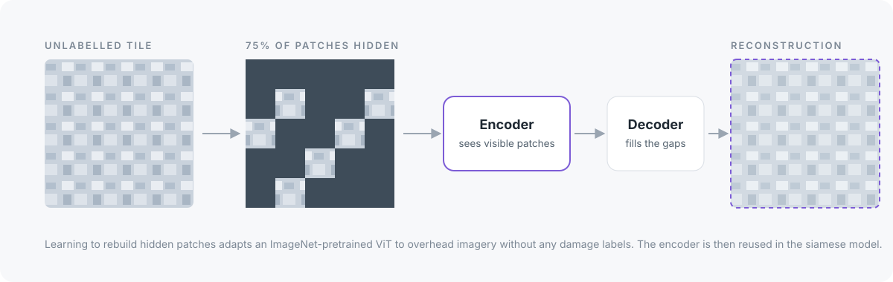

MonWaDes · Ongoing research
Detecting war damage from space
A deep-learning model that compares satellite images taken before and after a conflict to find destroyed buildings.
15cities
3regions
ViTbackbone
The data
Satellite imagery of 15 cities, labelled with UNOSAT damage assessments.
Ukraine
Syria
Palestine
The model
A Vision Transformer first learns what cities look like from above, without labels.

Then it compares the before and after image of each place to spot what was destroyed.

Embeddings
How the model sees thousands of satellite tiles, projected to 2D.

Gaza
Syria
Ukraine
The pipeline
Five stages, from raw imagery to evaluation, running on a GPU cluster.

Paper in preparation. Results will be added once published.